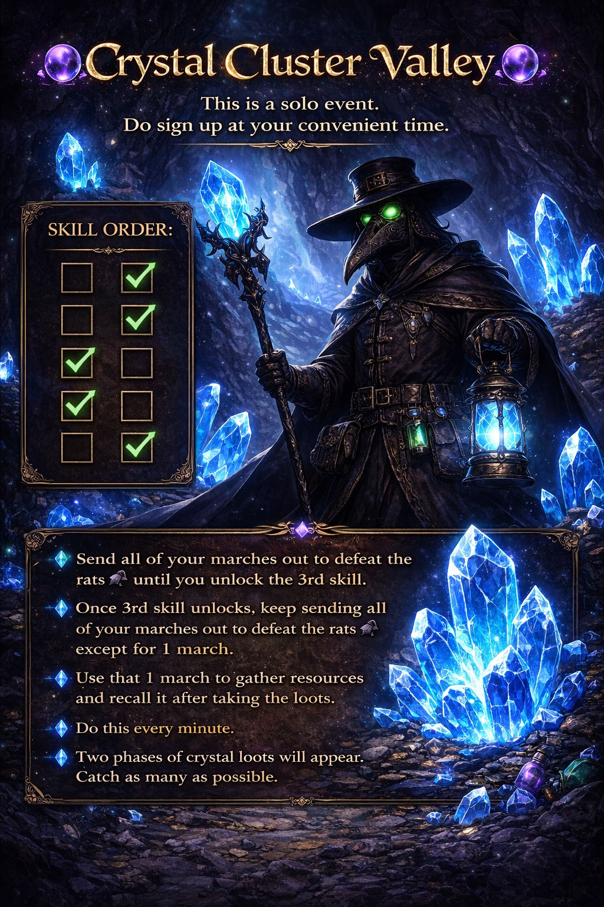
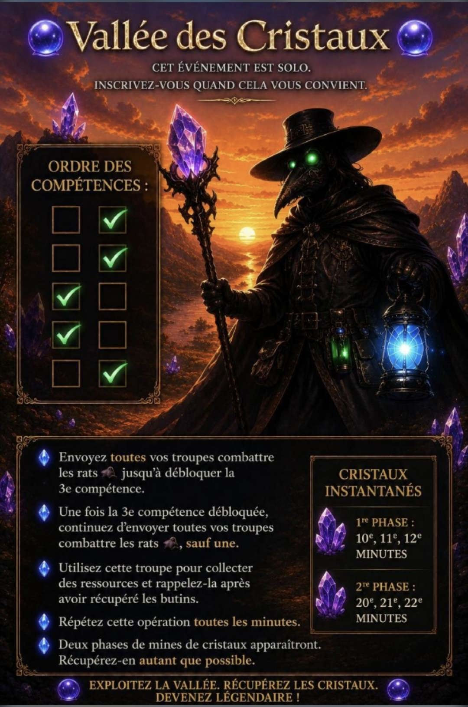

Crystal Cluster Valley
Quick strategy first; expand each section for instructions and preserved graphics.
Crystal Cluster Valley

Crystal Cluster Valley is a roughly 30-minute individual PvP event. Everyone in the instance is competition, including alliance members. The troops used there are event troops, so losses do not permanently damage your normal army.
The goal is crystals. Lower-level crystal tiles are found farther out and higher-level tiles toward the center. Early in the match, kill map mobs to gain event XP and unlock the event skill progression, then keep your marches collecting.
Special fast-collection crystal opportunities can appear during the match; pull marches from normal tiles when those are worthwhile. Occupied tiles can be contested, and displaced players may drop crystals.
The central Throne opens late in the match. Strong players can contest it, but if you are not part of that fight, keep farmingrather than stopping your crystal income just because the center is active.
Vallée des Cristaux
Stratégie rapide en premier ; ouvrez chaque section pour les détails et les images.
Vallée des Cristaux

C'est un événement PvP individuel d'environ 30 minutes. Tout le monde est concurrent, même les membres de l'alliance. Les pertes concernent les troupes de l'événement et n'endommagent pas définitivement votre armée normale.
Tuez des monstres tôt pour gagner l'XP d'événement, puis gardez vos marches sur les cristaux. Les cases plus fortes se trouvent davantage vers le centre. Des cristaux spéciaux à collecte rapide peuvent apparaître; déplacez vos marches si cela vaut le coup. Lorsque le Trône central ouvre en fin de partie, continuez à farmer si vous ne participez pas au combat central.